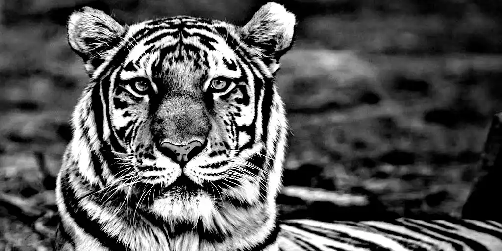
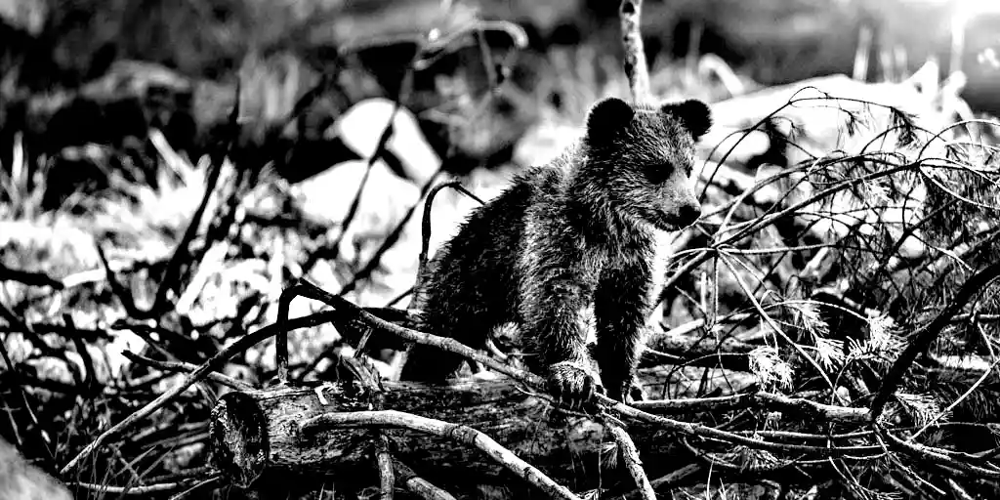

The lion (Panthera leo) is a species in the family Felidae and a member of the genus Panthera. It has a muscular, deep-chested body, short, rounded head, round ears, and a hairy tuft at the end of its tail. It is sexually dimorphic; adult male lions have a prominent mane. With a typical head-to-body length of 184–208 cm (72–82 in) they are larger than females at 160–184 cm (63–72 in). It is a social species, forming groups called prides. A lion pride consists of a few adult males, related females and cubs. Groups of female lions usually hunt together, preying mostly on large ungulates. The lion is an apex and keystone predator; although some lions scavenge when opportunities occur and have been known to hunt humans, the species typically does not.
Typically, the lion inhabits grasslands and savannas, but is absent in dense forests. It is usually more diurnal than other big cats, but when persecuted it adapts to being active at night and at twilight. During the Neolithic period, the lion ranged from Central Asia, Southeast Europe to Africa, but today it has been reduced to fragmented populations in sub-Saharan Africa and one critically endangered population in western India. It has been listed as Vulnerable on the IUCN Red List since 1996 because populations in African countries have declined by about 43% since the early 1990s. Lion populations are untenable outside designated protected areas. Although the cause of the decline is not fully understood, habitat loss and conflicts with humans are the greatest causes for concern.
One of the most widely recognised animal symbols in human culture, the lion has been extensively depicted in sculptures and paintings, on national flags, and in contemporary films and literature. Lions have been kept in menageries since the time of the Roman Empire and have been a key species sought for exhibition in zoological gardens across the world since the late 18th century. Cultural depictions of lions were prominent in Ancient Egypt, and depictions have occurred in virtually all ancient and medieval cultures in the lion's former and current ranges.
The tiger (Panthera tigris) is the largest extant cat species and a member of the genus Panthera. It is most recognisable for its dark vertical stripes on orange-brown fur with a lighter underside. It is an apex predator, primarily preying on ungulates such as deer and wild boar. It is territorial and generally a solitary but social predator, requiring large contiguous areas of habitat, which support its requirements for prey and rearing of its offspring. Tiger cubs stay with their mother for about two years, before they become independent and leave their mother's home range to establish their own.
The tiger once ranged widely from the Eastern Anatolia Region in the west to the Amur River basin, and in the south from the foothills of the Himalayas to Bali in the Sunda islands. Since the early 20th century, tiger populations have lost at least 93% of their historic range and have been extirpated in Western and Central Asia, from the islands of Java and Bali, and in large areas of Southeast and South Asia and China. Today's tiger range is fragmented, stretching from Siberian temperate forests to subtropical and tropical forests on the Indian subcontinent and Sumatra.
The tiger is listed as endangered on the IUCN Red List. As of 2015, the global wild tiger population was estimated to number between 3,062 and 3,948 mature individuals, with most of the populations living in small pockets isolated from each other. India currently hosts the largest tiger population. Major reasons for population decline are habitat destruction, habitat fragmentation and poaching. Tigers are also victims of human–wildlife conflict, in particular in range countries with a high human population density.
The tiger is among the most recognisable and popular of the world's charismatic megafauna. It featured prominently in ancient mythology and folklore and continues to be depicted in modern films and literature, appearing on many flags, coats of arms and as mascots for sporting teams. The tiger is the national animal of India, Bangladesh, Malaysia and South Korea.
Bears are carnivoran mammals of the family Ursidae. They are classified as caniforms, or doglike carnivorans. Although only eight species of bears are extant, they are widespread, appearing in a wide variety of habitats throughout the Northern Hemisphere and partially in the Southern Hemisphere. Bears are found on the continents of North America, South America, Europe, and Asia. Common characteristics of modern bears include large bodies with stocky legs, long snouts, small rounded ears, shaggy hair, plantigrade paws with five nonretractile claws, and short tails.
While the polar bear is mostly carnivorous, and the giant panda feeds almost entirely on bamboo, the remaining six species are omnivorous with varied diets. With the exception of courting individuals and mothers with their young, bears are typically solitary animals. They may be diurnal or nocturnal and have an excellent sense of smell. Despite their heavy build and awkward gait, they are adept runners, climbers, and swimmers. Bears use shelters, such as caves and logs, as their dens; most species occupy their dens during the winter for a long period of hibernation, up to 100 days.
Bears have been hunted since prehistoric times for their meat and fur; they have been used for bear-baiting and other forms of entertainment, such as being made to dance. With their powerful physical presence, they play a prominent role in the arts, mythology, and other cultural aspects of various human societies. In modern times, bears have come under pressure through encroachment on their habitats and illegal trade in bear parts, including the Asian bile bear market. The IUCN lists six bear species as vulnerable or endangered, and even least concern species, such as the brown bear, are at risk of extirpation in certain countries. The poaching and international trade of these most threatened populations are prohibited, but still ongoing.